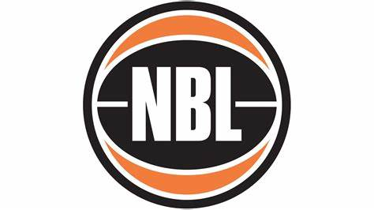

Basketball is a team game that is mostly played indoors. Two teams compete against each other. The game starts at the center circle with a jump ball. This happens when two opponents stand shoulder to shoulder in the middle of the center line, each in their respective half of the court. The rest of the team stands outside the circle. When the ball is now thrown vertically upwards by the referee, each of the two tries to capture the ball by jumping up. This is then immediately passed on to his own teammates. Now the game begins.
A team consists of five players. Players in a basketball game have assigned basketball positions: center, power forward, small forward, point guard, and shooting guard. On the right and left side of the court there is a basket at a height of about 3,05 meters(circa 10ft). Each team may have substitutes, up to seven players. Players may be substituted at any time.
The goal is to throw the basketball as manytimes as possible in the opponent´s basket, which is located on the opposite side of the court, similar to soccer. Depending on the difficulty level, i.e. the distance to the basket, the team gets two or three points for a hit. For this purpose, there are markings on the floor, which regulate how many points now have been scored. A free throw is rewarded with one point. A free throw is awarded to the team if a foul is caused by the opposing team. This means an attempt to hit the basket without being prevented by the opposing team.
A team has only 24 seconds to score. If no basket is scored in this time period, but the ball touches the ring, the same team gets the ball again. And it starts all over again. If a player stays under the opponent´s basket for more than three seconds, the other team gets the ball.
Each of the five players has a special position above. The smallest player is the point guard, he takes care of keeping the game going. The tallest player is called the center, he is responsible for the space under the basket. He tries his luck there to prevent as many hits of the opposing team as possible. His job is also to get rebounds, i.e. rebounds from the basket. When the ball is about to make its way down to fall into the basket, it must not be intercepted by a tall player at that moment. This intervention would be called goaltending.
The most important thing of all is, once a player has been passed the ball, he has the option to dribble with one hand. However, as soon as he holds the ball in both hands, he is only allowed to take two steps. If a ball is thrown to a teammate, it is called a pass. If the ball is already in the opponent´s half, it is not allowed to pass the ball back to your own half. It is absolutely forbidden to play the ball with the foot.
The winner is the one who has scored the most points. If the score is tied at the end of the game, the game will cotinue with extra time of five minutes each until a winner decided.
Generally, basketball is played in four quarters. A quarter is estimated at ten or twelve (NBA) minutes. The first break after the first quarter is two minutes. The half-time break between the second and the third quarters is ten minutes.
A basketball weighs about 650 grams and has an approximate diameter of 75 to 78 cm.
Each game requires two referees. Only NBA or higher leagues, national and international games need three referees.
